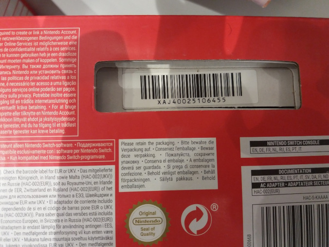
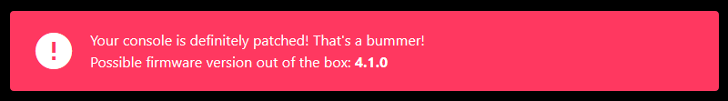
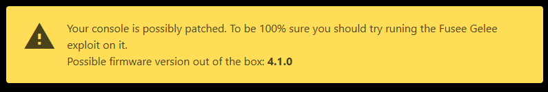
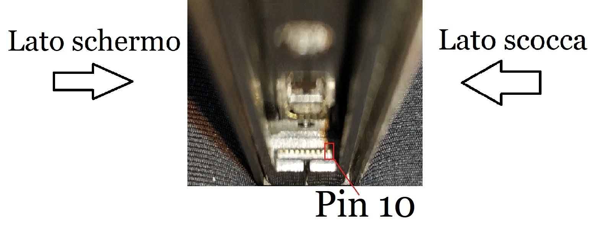
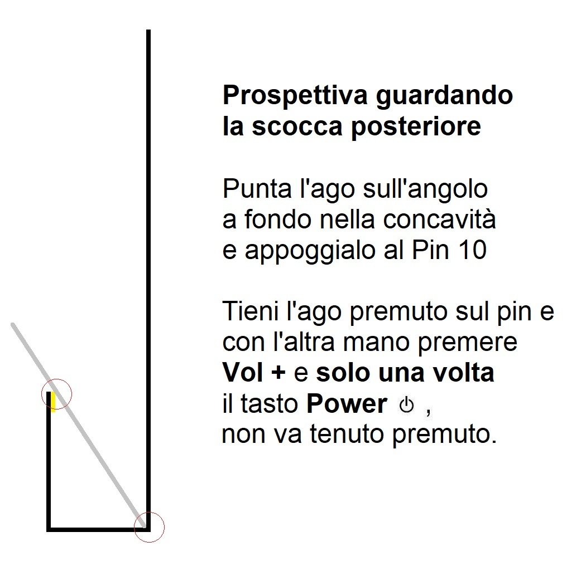
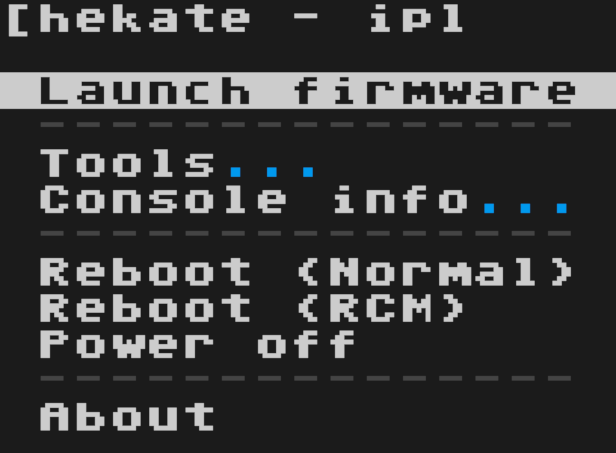

Verifica del seriale#

Prima di cominciare bisogna essere certi che la propria console sia a tutti gli effetti vulnerabile all'exploit "Fusée Gelée" (CVE-2018-6242).
Come regola approssimativa, qualsiasi console prodotta dopo giugno 2018 è molto probabile che non sia vulnerabile; queste console vengono definite "patchate".
Per essere sicuri al 100% che la propria console non sia patchata, bisogna essere in possesso del seriale della console, una stringa alfanumerica formata da 3 lettere ed 11 numeri (ad esempio: XAW12345678912). Questo può essere trovato sia sulla scatola che nella parte inferiore della parte tablet della console.
Dove trovare il seriale


1. Verifica online#
Per effettuare la verifica, si utilizzerà un sito internet.
Il sito in questione è https://ismyswitchpatched.com/.
Una volta aperto il sito, ci si troverà davanti una schermata dove si dovranno inserire le informazioni del seriale della console, prima scegliendo le 3 lettere ed un numero, dopo digitando altri 6 numeri.

In automatico il sito ci darà uno su tre possibili risultati, distinguibili dal loro colore: verde, rosso o giallo.
Nel caso in cui il banner sia verde la console è vulnerabile all'exploit, quindi proseguire con questa guida.
Nel caso in cui il banner sia rosso, la console appartiene a quelle patchate, quindi non è vulnerabile, allo stato attuale, a nessun exploit di tipo software e non sarà possibile procedere oltre.

Nel caso in cui il banner sia giallo, si è in una situazione incerta, cioè vi è una certa possibilità che la console possa essere vulnerabile.

Per esserne certi, bisognerà inviare un file (payload) di test nella console, che non andrà a cambiare nulla, ma ci darà soltanto la certezza che la console sia patchata o meno. Questo può essere fatto in in diversi modi, per esempio attraverso il PC, attraverso il proprio cellulare Android, oppure attraverso il proprio payload injector.
Per effettuare questo test si avrà di bisogno di alcune cose:
- Un cavo USB in modo da poter collegare la console al pc, che abbia quindi un'estremità USB Tipo-A e l'altra USB Tipo-C oppure, nel caso si volesse utilizzare il proprio smartphone Android, un cavo con entrambe le estremità USB Tipo-C;
- Un modo per cortocirtuitare il pin 10 del binario del joycon destro; per fare ciò si potrebbe utilizzare una graffetta, un ago, oppure un jig, un piccolo accrocchio da inserire nel binario del joycon destro della console;
IN ASSENZA DI JIG
Nel caso in un cui non si abbia il jig, è possibilie stamparselo da se, attraverso questo link, tramite una stampante 3D oppure, a mali estremi, utilizzare un ago, seguendo la procedura che seguirà.
PER UTENTI ESPERTI: A questo link si possono trovare tutti i metodi alternativi per realizzare un qualcosa che simuli un jig.

-
Un programma, nel caso in cui si stia utilizzando il pc per iniettare il payload che varia a seconda del sistema operativo:
- TegraRcmGui, nel caso in cui si utilizzi Windows;
- Fusée Launcher, nel caso si utilizzi macOS oppure una distro GNU/Linux;
- Rekado, nel caso si utilizzi uno smartphone Android.
- Utilizzando Google Chrome, attraverso il sito internet https://switch.exploit.fortheusers.org/, a prescindere dal sistema operativo utilizzato.
-
hekate come payload di test (il file in formato .bin si trova dentro il file .zip).
Una volta ottenuto tutto quanto, si può procedere alla sezione successiva, ovvero quella riguardante la modalità RCM.
1.1 Modalità RCM#
Per effettuare la prova, bisognerà mandare la console in modalità RCM.
Questo può essere fatto come segue:
- Assicurarsi di avere la console completamente spenta;
- Inserire il jig nel binario del joycon destro della console;
- Tenendo premuto il tasto Volume +, preme una volta il tasto di accensione.
La console sarà adesso in modalità RCM e non darà alcun segno di vita, ed è normale.
IN ASSENZA DI JIG SI PUÒ UTILIZZARE UN AGO
È possibile anche utilizzare un ago, seguendo attentamente la piccola guida riportata nelle immagini che seguono.
 
Bisogna adesso seguire una di queste procedure che seguono, a seconda di quale si è scelta in precedenza.
- Installare ed aprire TegraRcmGui, scaricato in precedenza;
- Andare sulla scheda Settings;
- Clickare su Install Driver, che installerà i driver necessari per comunicare con la console;
- Dopo averli installati, andare nella scheda Payload;
- Connettere la console al pc. Il pc dovrebbe a questo punto vedere la console (se questo non succede, ripetere dalla sezione Modalità RCM);
- Una volta connessa, si dovrebbe vedere un'icona verde con scritto RCM OK;
- Selezionare il payload hekate_ctcaer_x.x.x.bin precedentemente scaricato;
- Selezionare Inject Payload;
Nel caso in cui si abbia l'errore RC=-50, riavviare l'applicazione e provare di nuovo.
Adesso:
- Nel caso in cui il programma dica che il payload è stato inettato correttamente, ma sulla console non appare nulla, significa che la console è patchata, quindi non è vulnerabile attualmente a nessun exploit di tipo software.
- Nel caso invece in cui la console non sia patchata, sulla console dovrebbe apparire la schermata principale di hekate, segno del fatto che è possibile continuare con l'operazione, seguendo questa guida.
A questo punto è possibile spegnere la console selezionando Power Off (muovendosi con i tasti volume e selezionando con il tasto di accensione).

SCHERMO NERO?
NEL CASO IN CUI LA SWITCH NON DOVESSE ACCENDERSI NORMALMENTE, QUINDI PREMENDO IL TASTO DI ACCENSIONE, TRANQUILLI, NON È MORTA.
PER PORTARLA NUOVAMENTE IN VITA BASTA TENERE PREMUTO IL TASTO DI ACCENSIONE PER 12 SECONDI, RILASCIARE E PROVARE NUOVAMENTE AD ACCENDERLA.
TUTTO DOVREBBE TORNARE A FUNZIONARE!
- Aprire un terminale e spostarsi all'interno della cartella del fusee-launcher, scaricato in precedenza;
- Copiare il payload hekate_ctcaer_x.x.x.bin all'interno di questa cartella;
- Connettere la console al pc e deve restare spenta (se dovesse accendersi, ripetere dalla sezione Modalità RCM);
- Lanciare il comando:
$ sudo python3 fusee-launcher.py hekate_ctcaer_x.x.x.bin
Adesso:
- Nel caso in cui il programma dica che il payload è stato inettato correttamente, ma sulla console non appare nulla, significa che la console è patchata, quindi non è vulnerabile attualmente a nessun exploit di tipo software.
- Nel caso invece in cui la console non sia patchata, sulla console dovrebbe apparire la schermata principale di hekate, segno del fatto che è possibile continuare con l'operazione, seguendo questa guida.
A questo punto è possibile spegnere la console selezionando Power Off (muovendosi con i tasti volume e selezionando con il tasto di accensione).
SCHERMO NERO?
NEL CASO IN CUI LA SWITCH NON DOVESSE ACCENDERSI NORMALMENTE, QUINDI PREMENDO IL TASTO DI ACCENSIONE, TRANQUILLI, NON È MORTA.
PER PORTARLA NUOVAMENTE IN VITA BASTA TENERE PREMUTO IL TASTO DI ACCENSIONE PER 12 SECONDI, RILASCIARE E PROVARE NUOVAMENTE AD ACCENDERLA.
TUTTO DOVREBBE TORNARE A FUNZIONARE!
- Aprire Rekado, scaricato in precedenza;
- Navigare nella sezione Payloads dell'applicazione e garantire l'accesso alla memoria;
- Scorrere la pagina verso il basso, in modo tale da permettere all'applicazione di scaricare eventuali aggiornamenti dei vari payload;
- Connettere la console al telefono (se dovesse accendersi, ripetere dalla sezione Modalità RCM);
- Il telefono dovrebbe notificare il fatto di scegliere Rekado come opzione da usare come predefinita. Accettare e premere OK;
- Dal menù che apparirà selezionare la voce hekate.bin.
Adesso:
- Nel caso in cui il programma dica che il payload è stato inettato correttamente, ma sulla console non appare nulla, significa che la console è patchata, quindi non è vulnerabile attualmente a nessun exploit di tipo software.
- Nel caso invece in cui la console non sia patchata, sulla console dovrebbe apparire la schermata principale di hekate, segno del fatto che è possibile continuare con l'operazione, seguendo questa guida.
A questo punto è possibile spegnere la console selezionando Power Off (muovendosi con i tasti volume e selezionando con il tasto di accensione).
SCHERMO NERO?
NEL CASO IN CUI LA SWITCH NON DOVESSE ACCENDERSI NORMALMENTE, QUINDI PREMENDO IL TASTO DI ACCENSIONE, TRANQUILLI, NON È MORTA.
PER PORTARLA NUOVAMENTE IN VITA BASTA TENERE PREMUTO IL TASTO DI ACCENSIONE PER 12 SECONDI, RILASCIARE E PROVARE NUOVAMENTE AD ACCENDERLA.
TUTTO DOVREBBE TORNARE A FUNZIONARE!
- Aprire Chrome e recarsi sul sito https://switch.exploit.fortheusers.org/;
- Selezionare direttamente sul sito la voce CTCaer hekate (vx.x.x);
- Connettere la console al PC (se dovesse accendersi, ripetere dalla sezione Modalità RCM);
- Selezionare Do the thing! e sulla schermata del consenso che appare, scegliere APX e premere Connect.
Adesso:
- Nel caso in cui il programma dica che il payload è stato inettato correttamente, ma sulla console non appare nulla, significa che la console è patchata, quindi non è vulnerabile attualmente a nessun exploit di tipo software.
- Nel caso invece in cui la console non sia patchata, sulla console dovrebbe apparire la schermata principale di hekate, segno del fatto che è possibile continuare con l'operazione, seguendo questa guida.
A questo punto è possibile spegnere la console selezionando Power Off (muovendosi con i tasti volume e selezionando con il tasto di accensione).
SCHERMO NERO?
NEL CASO IN CUI LA SWITCH NON DOVESSE ACCENDERSI NORMALMENTE, QUINDI PREMENDO IL TASTO DI ACCENSIONE, TRANQUILLI, NON È MORTA.
PER PORTARLA NUOVAMENTE IN VITA BASTA TENERE PREMUTO IL TASTO DI ACCENSIONE PER 12 SECONDI, RILASCIARE E PROVARE NUOVAMENTE AD ACCENDERLA.
TUTTO DOVREBBE TORNARE A FUNZIONARE!